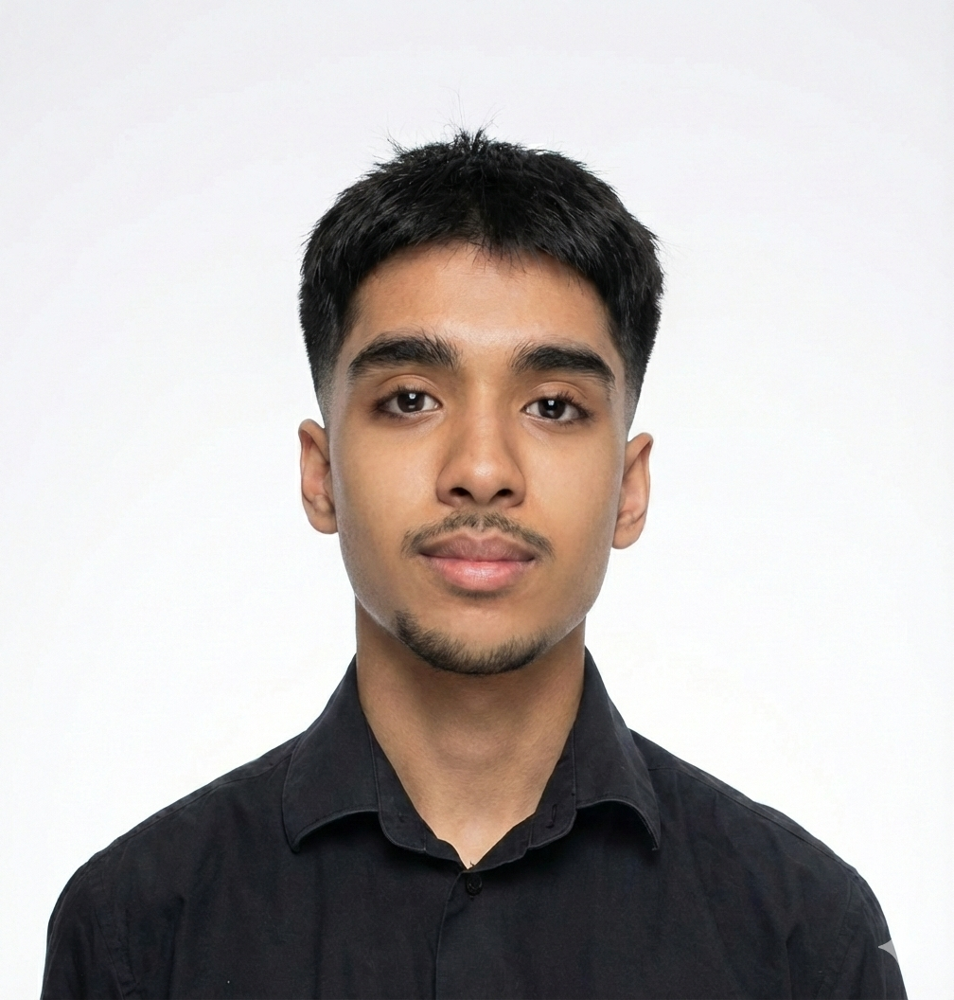

Étudiant BUT R&T · Spécialisation Cybersécurité · IUT Nice Côte d'Azur
Passionné par la sécurité des réseaux et l'administration système, je construis des projets concrets autour de la cybersécurité, de l'infrastructure réseau et du développement d'outils. Je recherche une alternance pour l'année 2026–2027.

Mon parcours, mes objectifs, mes passions
En 2ᵉ année de BUT R&T à l'IUT de Nice Côte d'Azur (Valbonne), je me spécialise en cybersécurité : administration réseau, pentest, virtualisation et sécurité des infrastructures.
Je recherche une alternance pour 2026–2027 dans le domaine des réseaux, de la cybersécurité ou de l'administration système, pour développer mon expertise en entreprise.
Informatique depuis l'enfance, sport intensif (football, musculation, padel, futsal), mécanique et pêche. Toujours curieux d'apprendre, que ce soit sur un réseau ou sous le capot d'une voiture.
Disponible pour une alternance à partir de septembre 2026